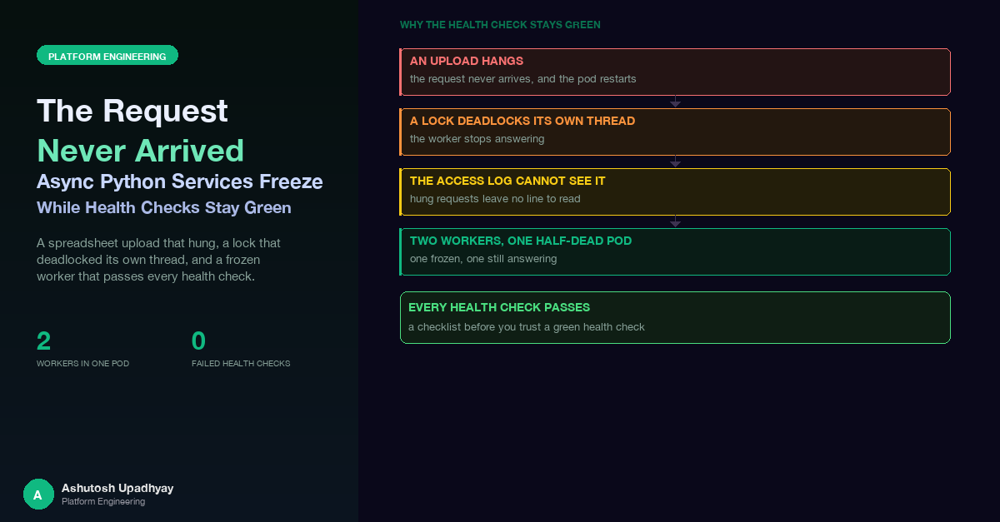

A spreadsheet upload that hung and restarted its pod, a lock that deadlocked its own thread, an access log that cannot see hung requests, and why a frozen worker inside a two-worker pod passes every health check.
The symptom, as it first reached me, was short: a spreadsheet upload hangs, and the pod restarts. The endpoint accepted a file of cost-allocation rules, parsed it, and wrote a small JSON document to disk. After the upload, the page never came back, the container was restarted by its liveness probe, and the access log showed no trace of a request that had hung. It looked like the request had never arrived.
I found a cause quickly: the handler was declared async def but its body was entirely blocking work. I fixed that, declared it done, and was wrong. The fix was correct and insufficient, and in one scenario it would have made the failure strictly worse. A second review found the real cause underneath it, a lock that deadlocked its own thread.
This post is about the failure family that sits behind that story: a Python service whose event loop, or one of its worker processes, stops making progress while every external signal says it is healthy. The previous posts in this series covered the simplest member of the family, a synchronous model call inside an async handler that pushed a pod past its liveness window, and the monitoring angle of pods killed mid-request. What follows is the rest: the deadlock that sync code can hide, the access-log blind spot, the half-dead pod, how to test one worker at a time, and the idle timers that cut silent routes.
The common thread. Every failure below has the same shape: the thing that reports health is not the thing that does the work. A probe answers from a thread, a log line is written after the work finishes, a load balancer counts bytes rather than progress. When the work stops, those signals either keep saying "fine" or go silent in a way that looks like nothing happened.
FastAPI runs an async def endpoint directly on the event loop. Anything blocking inside it stops the whole worker, not just that request: a spreadsheet parse in pandas or openpyxl, an fcntl.flock call, a write to an object-storage-backed mount. While that body runs, the worker cannot answer its health endpoint. Give the probe a short timeout and a handful of consecutive failures, and the kubelet sends SIGTERM to a container that is in the middle of a request.
That also explains the "never arrived" feeling. The process dies mid-request, so the request is never logged as finished. The fix for this layer is mechanical: declare the endpoint with plain def, so FastAPI runs it in its threadpool, and read the upload with file.file.read() instead of await file.read(). Starlette already rewinds every file part after parsing the form, so no explicit seek is needed; I confirmed that in the installed library rather than trusting memory.
The verification I like for this class is structural, and cheap: import the routers and assert that no APIRoute endpoint is a coroutine function unless it genuinely awaits.
import inspect
from fastapi.routing import APIRoute, iter_route_contexts
ALLOWED_ASYNC = {"/health"} # reviewed: these only await
def test_no_async_endpoint_does_blocking_io(app):
checked = 0
for rc in iter_route_contexts(app.routes):
route = rc.original_route
if not isinstance(route, APIRoute):
continue
checked += 1
if rc.path in ALLOWED_ASYNC:
continue
assert not inspect.iscoroutinefunction(route.endpoint), (
f"{rc.path}: async def endpoint - if it blocks, it freezes the worker"
)
assert checked, "walked no routes - the test is hollow"On FastAPI 0.14x and later, app.routes holds one wrapper per included router, so walk the flattened routes and assert that you checked some. A loop over app.routes that filters on isinstance(route, APIRoute) can silently skip every included route and still pass.
Treat that test as a gate with an allowlist, not a rule that async is forbidden. Endpoints that really only await belong on the loop. The point is that every async def in the list has been looked at by a human who asked "does anything in here block?"
The structural test does not catch a subtler variant, which I found in two places. One report endpoint wrapped the final render in run_in_executor but loaded a large number of data files off a mounted bucket on the loop first. The async wrapper bought nothing and still blocked the loop for the expensive part. Its sibling endpoint did identical work as a plain def and was, by accident, the better-behaved of the two.
Another route did await asyncio.to_thread(fetch) to get a stored message file from object storage, and then, back on the loop, parsed a message of up to about 11 MB, base64-encoded its images, and ran a regular expression across the result. Only the I/O had been threaded. The fix is to move all the CPU work into one pure function and thread the whole thing:
def build_preview(raw: bytes) -> str: # pure: bytes in, string out
... # parse, encode, regex - no I/O, no loop
html = await asyncio.to_thread(build_preview, raw)Pure functions are easy to test for loop-safety with a spy. Call asyncio.get_running_loop() inside the function and assert that it raises RuntimeError. If it raises, the function is running on a worker thread, not on the loop. That test fails the day someone "simplifies" the code back onto the loop.
Here is where my first diagnosis went wrong. Changing the endpoint from async def to def does not remove the blocking work. It moves it onto a threadpool thread. If that work is merely slow, you have fixed the problem. If it is stuck forever, you have just moved a deadlock out of sight of the one mechanism that would have noticed it.
Before the change, a deadlocked handler froze the loop, the probe failed, the container restarted, and the system healed itself, noisily. After the change, the deadlocked thread sits in the pool, the loop stays responsive, /health answers, and liveness never fires. A self-healing crash loop becomes a permanent silent hang that only a manual pod delete fixes. The rule I took from it: never ship an async-to-sync change without first establishing that nothing underneath can deadlock.
And something could. The module guarded its read-modify-write cycle with a context manager that held a threading.Lock, and then called load() and save() inside the guarded block. Both of those helpers acquired the same lock again, on the same thread.
_lock = threading.Lock() # non-reentrant
@contextlib.contextmanager
def guard():
with _lock: # acquired once ...
fd = take_cross_process_flock()
yield
release(fd)
def load():
with _lock: # ... and again, same thread: blocks forever
...
def save(data):
with _lock:
...
with guard():
data = load() # deadlockA non-reentrant lock acquired twice by one thread blocks that thread forever. The details make it worse than a plain hang. By the time the thread blocks, it already holds the cross-process file lock, so the sibling worker process in the same pod would also wait on it the next time it tried to save. The target JSON file had never once been written, which is the quiet clue: the feature had never worked end to end.
The fix was one word, threading.RLock(), plus a comment explaining why it must stay reentrant. The way to prove it is to reproduce the lock topology in a unit test and watch both sides: with Lock the worker thread never returns; with RLock it completes.
"The sibling handler works" proves nothing if nobody has run it. Two endpoints doing the same job, one apparently healthy, is only evidence if the healthy one has been exercised with real input. The same lesson shows up in the post on tests that cannot fail: a check you have never seen go red is not a check.
I had also misread the one piece of evidence that could have pointed at the second cause. The endpoint did appear in the access log, as a few earlier requests that had completed with 400 responses. I took the absence of any successful or hung entry to mean the request never reached the service. It had reached the service. It simply could not be logged, because of where the log line is written.
@app.middleware("http")
async def access_log(request, call_next):
response = await call_next(request) # a hung request never returns from here
record(request.url.path, response.status_code)
return responseMiddleware like this writes its line only after call_next returns. A request that deadlocks inside the handler never returns, so it never appears. A request that is killed with its pod never appears either. "The request never arrived" and "the request never completed" produce identical logs. If you want to tell them apart, the middleware has to write twice: once on arrival, with an in-flight marker, and once on completion. Then a request that has an arrival line and no completion line is exactly the one you are looking for.
The wider lesson is about what a log is evidence of. A line written after the work tells you about work that finished. For failures where the work does not finish, absence from that log carries no information.
Many Python API images run uvicorn with more than one worker process, partly to use more than one core and partly for resilience. The resilience argument has a catch. I checked the following in the installed uvicorn source and observed it in a running pod: the parent supervisor pings each worker and the worker answers from a daemon thread. A blocked event loop does not stop that thread, so the supervisor happily reports the worker alive and never restarts it. Separately, the kubelet's health probe goes to the pod's shared listening socket, where the other worker is free to accept it.
The result is a half-dead pod. One worker is wedged, with its event loop frozen, while the other one answers every probe. The pod stays Ready. It becomes NotReady only if the second worker is also busy long enough to miss probes. The wedged worker never recovers on its own, and every user whose connection landed on it stalls for as long as it stays frozen. Everything on the dashboard says the pod is fine, because half of it is.
| Layer | What it checks | Why a frozen worker passes |
|---|---|---|
| Process supervisor | Worker answers a ping | The reply comes from a daemon thread, not the loop |
| Kubelet liveness / readiness | HTTP health endpoint on the pod | The sibling worker accepts the probe |
| Service endpoints | Pod is Ready | Pod stays Ready while one worker is wedged |
| Access log | Completed requests | Hung requests are never written |
It would be some comfort if the damage were spread evenly, so that a single frozen worker meant exactly half of all users. It is not. Keep-alive connections arriving on a shared listening socket are often pinned unevenly across the workers. In one pod I measured the split: of eight pinned connections, one sat on one worker and seven on the other. If the frozen worker is the lightly loaded one, few people notice. If it is the one holding most connections, nearly everyone does, and the pod still looks healthy.
This is where an ordinary liveness test lies to you. If you pin some connections, freeze a worker with a slow request, and measure the health endpoint, a pass can simply mean that every one of your connections happened to land on the healthy worker. I wanted a harness that could not pass for that reason, so it works in a specific order:
# idea: which worker process owns this loopback connection?
inode = server_side_socket_inode(client_port) # from /proc/net/tcp*
for pid in worker_pids():
if inode in socket_inodes(pid): # from /proc/<pid>/fd
return pidThe verdicts matter as much as the mechanics. A harness that can only say pass or fail will eventually report a pass it has not earned, so this one has a third outcome:
| Exit | Meaning |
|---|---|
| 0 | Pass, and discriminating: the other worker stayed responsive |
| 3 | Pass but ambiguous: both workers were slow, so the mapping is not proven |
| 1 | Fail: no block seen on a build that should show one, or a block seen on a build that should be clean |
| 2 | Void: a worker had no pinned connection, a connection reconnected or died, or the slow request did not finish normally. Never a pass, never a fail |
It has two modes. The control mode runs against a build that is known to have the bug and demands that the harness detect it; if it cannot see a bug that is there, its clean result on the fixed build means nothing. The clean mode runs against the fixed build and requires the owning worker's health latency to stay under a limit. In the live control run, a single slow request froze its worker's health endpoint for 12.73 seconds across every connection that worker owned, while the other worker kept answering in a millisecond. That one measurement is the whole phenomenon, with numbers on it.
Before running the real test there is a free dry run that only does the mapping and sends nothing slow. It tells you whether both workers are even coverable in that pod. A harness that cannot map connections to workers should refuse to run, not guess.
Design rule for any liveness test. It must be able to fail. Prove it by running it against a build with the bug (it must fail or detect), then against the fix (it must pass), and give it a "void" outcome for runs where the conditions were not met. Otherwise a quiet pod and a broken harness look identical.
Timeouts decide how long a freeze lasts: with the SDK's defaults of a 60-second read timeout and up to five attempts, one slow synchronous call can hold a worker for about five minutes, which is why the client timeout and retry budget are now set explicitly (see the context-overflow post). A second clock runs outside your process.
A Network Load Balancer drops a TCP connection that has been silent for 350 seconds, and 350 seconds is its default. If the service behind it sends no bytes for longer than that on a route, the client sees a dropped connection, even though the server is working and the proxies in between have much longer timeouts configured.
This is not a hypothetical edge. A draft-generation route sends nothing until the model has finished, and a long draft can take minutes. The read timeout on its Bedrock client therefore defaults to 330 seconds, 20 seconds under the load balancer's clock. A longer timeout would not buy more time; it would just turn a clean error into a hung request that the client has already abandoned. The value lives in configuration, is clamped to a sane range, and falls back to the default if given garbage.
For routes that stream, the fix is the opposite: send bytes. The streaming endpoints emit an SSE comment frame, : keepalive, every 25 seconds whenever the underlying generator has been quiet, so a long post-processing step cannot look like an idle connection. The SSE traps post covers the event stream itself. The keepalive wrapper has one subtle requirement that is easy to get wrong:
pending = None
try:
while True:
if pending is None:
pending = asyncio.ensure_future(inner.__anext__())
done, _ = await asyncio.wait({pending}, timeout=25)
if not done:
yield ": keepalive\n\n" # inner step is still running; keep waiting on it
continue
try:
item = pending.result()
except StopAsyncIteration:
return
finally:
pending = None
yield item
finally: # client disconnect, error, or normal end
if pending is not None and not pending.done():
pending.cancel()
await asyncio.wait({pending}) # let the cancelled step unwind first
await inner.aclose() # so the inner generator's cleanup runsThe wrapper uses asyncio.wait with a timeout, not asyncio.wait_for. wait_for cancels the awaited task when the timeout fires, which would cancel the inner step you are trying to keep alive. asyncio.wait just reports that the task is not done and leaves it running, so the wrapper can emit a frame and go back to waiting on the same pending step. No inner step is ever lost or restarted, and on a client disconnect the pending task is cancelled and the inner generator is closed so its cleanup runs.
Clocks to line up, from the outside in. Load balancer idle timer, then reverse-proxy read timeout, then application read timeout, then the SDK client's read timeout and retry budget, then the liveness window. Any silent route needs its shortest clock to be one you chose.
async def endpoint. Assert in a test that none of them does blocking I/O, or keep an explicit allowlist of those that only await.The per-worker harness proves a build is clean by borrowing a real slow request to freeze a worker. The next thing I would like is a deliberately harmless "freeze on demand" route that exists only in test builds: it blocks the loop for a duration the caller specifies and does nothing else. With a known freeze length, the same drill can run against any service without finding a naturally slow request, and the harness can assert a precise relationship between the freeze and the owning worker's health latency, while the sibling worker stays near its baseline. It would turn the technique from a one-off investigation into a reusable template for every multi-worker service.
async def with a blocking body freezes the whole worker. Use plain def for blocking handlers, and thread all of the work, not just the I/O.call_next cannot see a hung request. "Never arrived" and "never completed" look identical unless you also log arrival.Disclaimer: The views and opinions expressed in this post are my own and do not represent those of my employer or any organisation I am associated with.